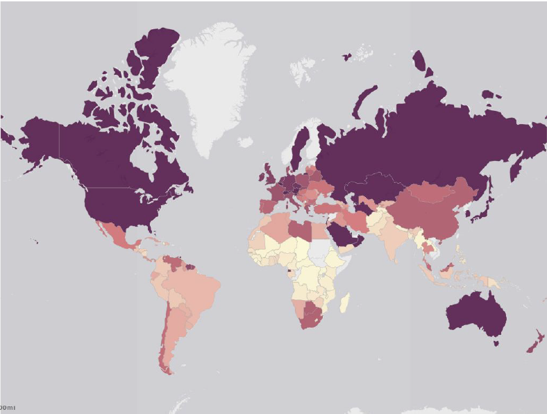

Hi, I'm Frank
programmer and analyst passionate about data and visualization
I write code and tools to process data and help those who make descisions based on it
...and I make some neat interactive projects on the side!
- Java
- Javascript (vanilla, D3, jQuery)
- Python
- C#
- PHP
- SQL/MySQL/SQLite
- HTML
- CSS
Languages
- ArcGIS Desktop / Online
- OpenStreetMap
- Tableau
- Fulcrum
- SPSS Statistics
- Azure
- Mircrosoft Office (Access, Excel, Word, Powerpoint)
- Visual Studio 2015
- Unity3D
- Photoshop / Illustrator CS6
Software
NBR Maritime Awareness Project

Python Script Tool for CSV and Feature Classes

ArcMap has no native support for CSV files, which is problematic when mass CSV files need to be converted to geographic layers.
An ArcMap script tool that merges a folder of CSV files and converts it into a single dbf table. The tool has parameters to create point layers or line layers in the process.
The code is available here.
UW Game Dev Club Site

A website, made with no libraries, for the Game Development Club at the University of Washington. The site is a hub for announcements, club related information, resources, and student made games.
I also implemented a PHP based Content Management System (CMS) to help future officers and admins to easily update site content.
The code is available here.
Int'l District Art (Seattle)

An interactive map that shows the various public art pieces in the international district. Details for the artwork sis available by clicking on the various point locations.
Geocode using Field Papers and Github (gist). Data collection using Fulcrum. Visual Display using Carto.
Tennis Court Spatial Pattern and Median Income, Correlation?

Residents in areas of higher average median income (darker shades) do not have to travel as far to access a tennis court compared to residents of lower average median income.
Unnamed Prototype

My first big game development project. Learned a lot about game design, networking, and most importantly, failure. In short, two novice game devs should not be aiming for a triple-A level, space-shooter MMO.Since, I've worked on many more games and failed at even more games. Failure is good because it means I'm learning.
Water Quality in WRIA 8, King County (WA)

Darker shades show higher "restoration potential," areas that are more effective for investment. These areas also happen to be the less populated areas.
Comparing US poverty levels in 2003 and in 2013 (Tableau)

Assault Occurrences in Seattle (2010)

By calculating Moran's I for the following categories:
Contiguity edges only
Contiguity edges and corners
Inverse Distance
Inverse Distance Squarted
Showed cluteried patterns of assault occurrences.
By calculating the General G for the same categories, results showed high clustering.
Choropleth of Carbon Emissions Per Capita
